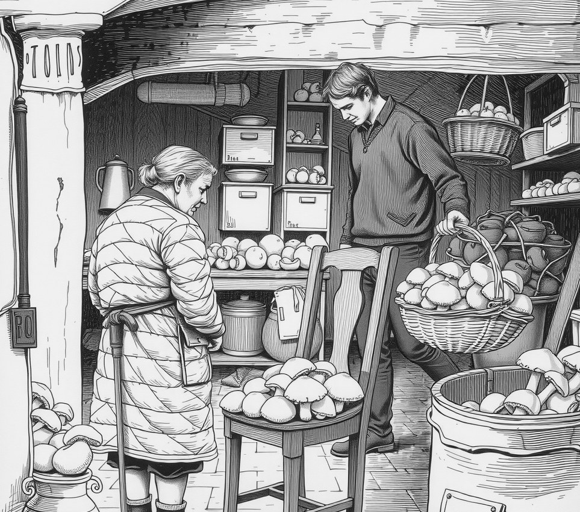

Qaanaaq Deepholm, Greenland . 9 August 2170

The last human-tended mushroom farm in the buried Greenland arcology of Qaanaaq Deepholm was switched off on Friday, aged 74 in its present form and older in its root. It was 49 rooms wide and leaves four surviving relatives of the Aputiku family, who say they will miss the harvest.
The farm was founded in 2096 by a grandmother who wanted something to do with her damp cellar. It fed the household through two rationing winters and supplied the lower market with a brown cap that buyers described as fine.
In 2121 the family began to notice that disputes ended in a particular way. A cousin demanding the good bunk space would arrive at the dinner table to find a single pale cluster fruiting in the chair of the cousin who already had it. A brother seeking the sealed-door key found three on his rival's seat. Over 49 years, the farm settled 31 disputes over rooms, tools, a ration card and one second-hand cooling unit. No ruling was appealed. Appeals would have meant sitting down.
The pattern was confirmed this spring, when a granddaughter charted every fruiting against every quarrel on the kitchen wall display. The farm had backed the quieter party in 29 of 31 cases. In the other two, the quieter party was lying.
The family has not yet divided the farm's contents. The oldest relative has asked for a chair to be placed in the main bed room and left empty.